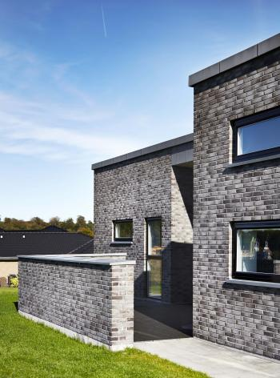
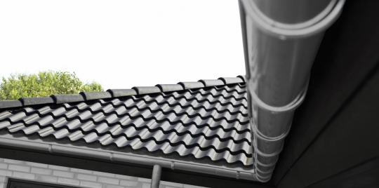
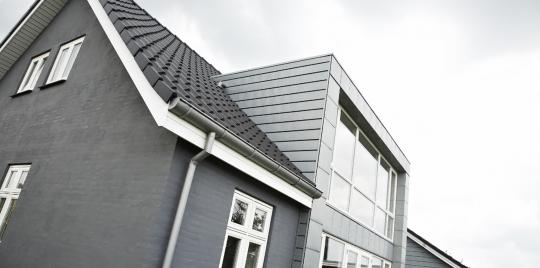
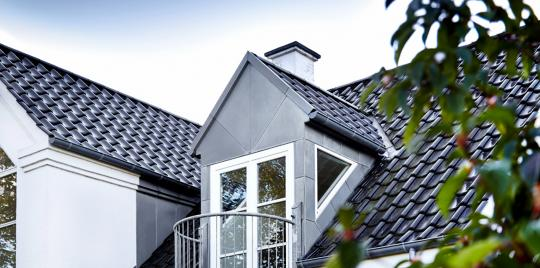
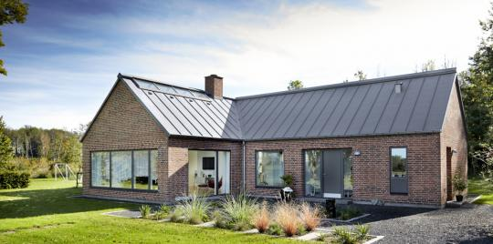

Professionelle byggeløsninger med livslang holdbarhed
Vi sikrer livslang holdbarhed og giver markedets bedste garanti på byggeløsninger lavet af zink og kobber.
Markedets sikreste byggeløsninger i zink, kobber og aluminium
NG ZINKs tagrende-, facade-, kvist- og tagløsninger er professionelle byggeløsninger lavet af materialer af allerhøjeste kvalitet, som løbende testes af uafhængige institutter. NG ZINKs zinkmaterialer er de foretrukne materialer til alle anvendelser, hvor der kræves en naturlig og levende overfladeoptik, lang holdbarhed og eksklusivt udseende. Zink og kobber løsninger fra NG ZINK er vedligeholdelsesfrie, 100% genanvendelige, og har under normale forhold en holdbarhed på op til 70 år.
Derfor sælges og monteres NG ZINKs PRO løsninger kun af professionelle fagfolk. Det sikrer et langtidsholdbart og flot resultat som holder hele husets liv.
Find en tagrende-, facade-, kvist- eller tagløsning som matcher din drømmebolig!
Kontakt vores entreprise team her, og få rådgivning om type, materiale og løsningsvalg. Vores entrepriseteam kan desuden hjælpe med at sætte dig i forbindelse med en lokal håndværker som har den ekspertise som kræves til din løsning.

Vores byggeløsninger

NG PRO Rain

NG PRO Face

NG PRO Attic

NG PRO Roof
NG PRO
NG PRO byggeløsninger adskiller sig fra almindelige zink- og kobberløsninger på flere punkter såsom fremstilling, udseende, montage og garantien.
Vores firma producerer zink- og kobberløsninger ifølge gammeldags traditioner i blikarbejdet. Mens vores PRO-tagrender er monteringsklare, hvilket sikrer hurtig og nem montage, er de ikke maskinfremstillede som mange andre sammenlignelige løsninger. PRO-regnafvandingssystemer er karakteristiske for deres flotte håndloddede dele og firkantede forme, som følger husets linjer – i modsætning til maskinfremstillede regnafvandingssystemer med bøjninger. Vores PRO facade-, tag- og kvistløsninger er også fremstillet på vores værksted af det dygtigste faguddannede personale. Vores præfabrikation og høj visuel fokusering sikrer et eksklusivt udseende. Selvom vores PRO-løsninger er håndlavede, giver vores præfabrikation optimale vilkår for den mest økonomiske fremstilling, hvilket gør disse løsninger tilgængelige for alle.
Vores supportteam og produktionsafdeling sørger for projektering, specialtilpasninger og giver fuld support og rådgivning både til håndværkere og boligejere.
Som den eneste på markedet tilbyder NG Zink livstidsgaranti på byggeløsninger i zink og kobber. Vores livstidsgaranti sikrer, at du aldrig skal skifte dine tagrender, facader, kviste eller tag, lavet af zink eller kobber, og monteret af professionelle håndværkere.
Læs mere om NG PRO byggeløsninger her.
NG Standard
NG Standard byggeløsninger er maskinfremstillede tagrende-, facade-, kvist- og tagløsninger i massiv zink og kobber. NG Zinks standard løsninger lever ikke op til det eksklusivt udseende af NG PRO byggeløsninger, så de er de foretrukne løsninger til anvendelser, hvor der ikke kræves en høj visuel prioritering (fx mange etage ejendomme).
NG Zink A/S har Danmarks største lagersortiment af tagrende-, facade-, kvist- og tagløsninger i zink. Disse løsninger monteres hurtigt og nemt.
NB. Vi giver ikke livstidsgaranti på NG Standard byggeløsninger, og vi tilbyder heller ikke rådgivning, projektering og hjælp på byggepladsen.
Få rådgivning fra NG ZINK
Kontakt os, og få rådgivning om type, materiale og løsningsvalg. Vores entrepriseteam kan desuden hjælpe med at sætte dig i forbindelse med en lokal håndværker som har den ekspertise som kræves til din løsning.
Kontakt os nu
Og find den byggeløsning som bedst matcher din drømmebolig.